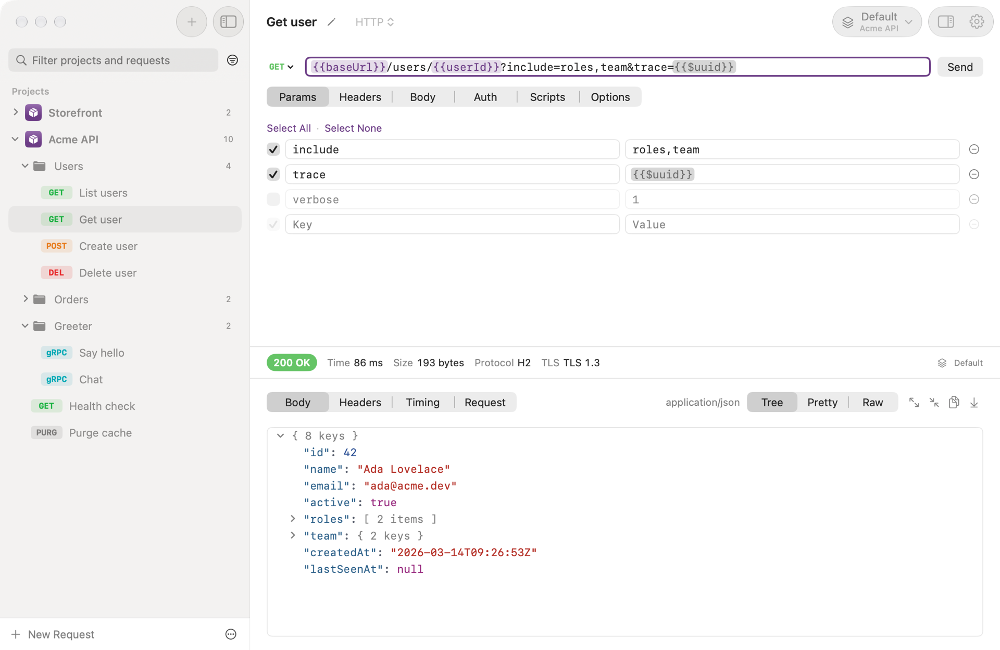
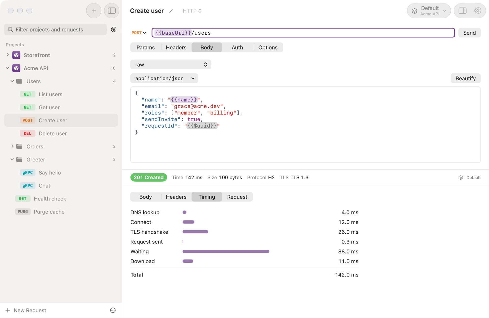
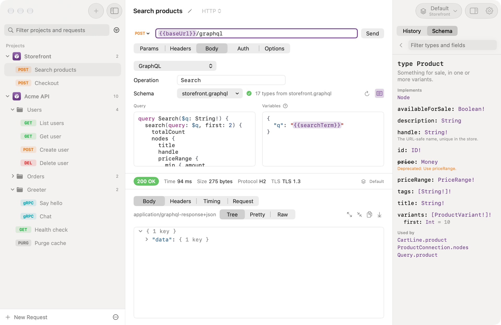
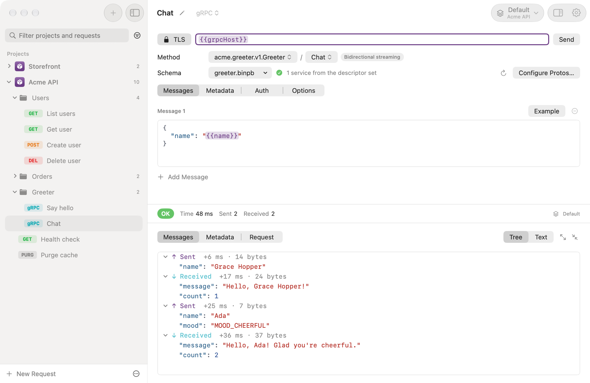
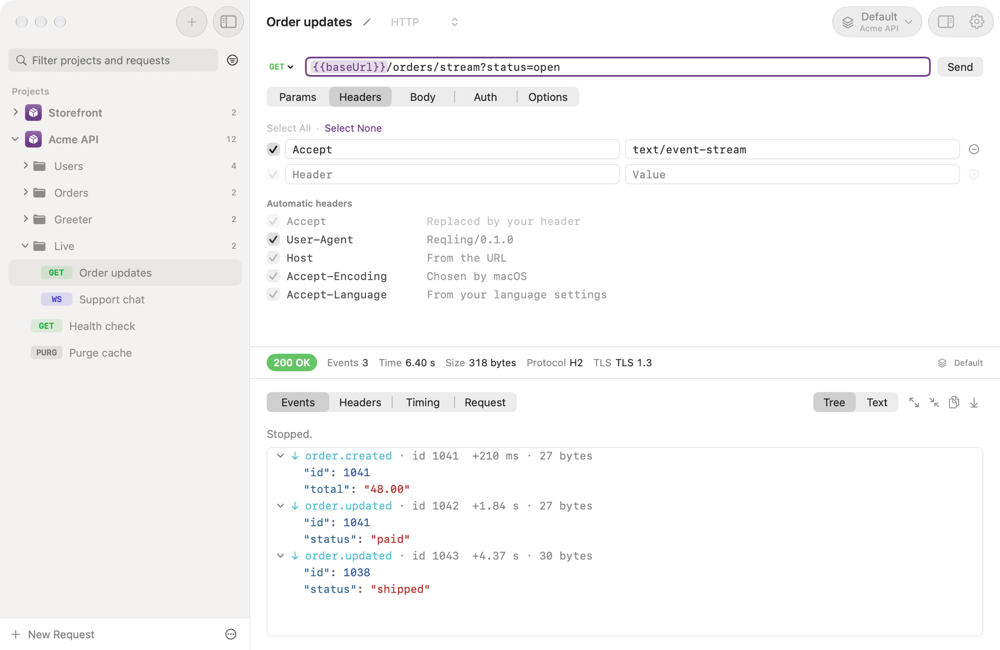
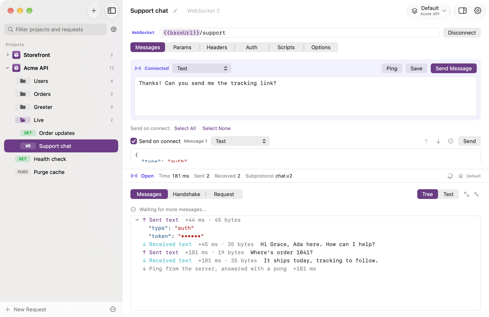

Reqling
A small, native Mac client for HTTP, GraphQL, gRPC, and WebSocket APIs. Keep your requests in your repository, and send them yourself or through your AI agent.

A small, native Mac client for HTTP, GraphQL, gRPC, and WebSocket APIs. Keep your requests in your repository, and send them yourself or through your AI agent.

Projects
A project is a folder of small JSON files, so it diffs cleanly and sits in your API's own
repository. Edits from a git pull or your editor show up in the window as they land.
Requests
Raw, form, binary, and GraphQL bodies, with auth set per request or inherited from a folder.
{{variables}} fill in from the active environment or a Global one every project shares,
and every response breaks its time down by phase.

GraphQL
Completion, descriptions, and checking come from the API's schema, read by introspection with the request's own auth or from a schema file. Browse every type beside the request.

gRPC
Call unary and streaming methods with messages written as proto3 JSON. The schema comes from your project's protos, a descriptor set, or server reflection, and every message lands on one timeline.

Event streams
A text/event-stream response stays open and lists each event with its type, ID, and time,
its JSON opened to its fields. A GET stream reconnects with Last-Event-ID, as a browser's
would.

WebSockets
Save the messages a connection opens with, sent in order, then send more while it's live. Text and binary go both ways on one timeline, with pings, pongs, and close codes.

MCP
Turn on the built-in MCP server, and agents like Claude Code and Codex can write requests, pick environments, and send them while you watch the window. Secret values are write-only, so no tool ever returns one.
claude mcp add \
--transport http reqling \
http://127.0.0.1:39717/mcp \
--header "Authorization: Bearer <token>"Mark a variable secret, and its value lives in your Keychain, never in the project.
Client certificates matched by host, extra trusted CAs, and passphrases in your Keychain.
Paste a cURL command into the URL field, or copy any request back out as one.
Filter by name, method, URL, or service, and search any response in place.
Reqling checks for new versions, and verifies each download before it installs.
A SwiftUI app for macOS 26, in light and dark, with no account to make.